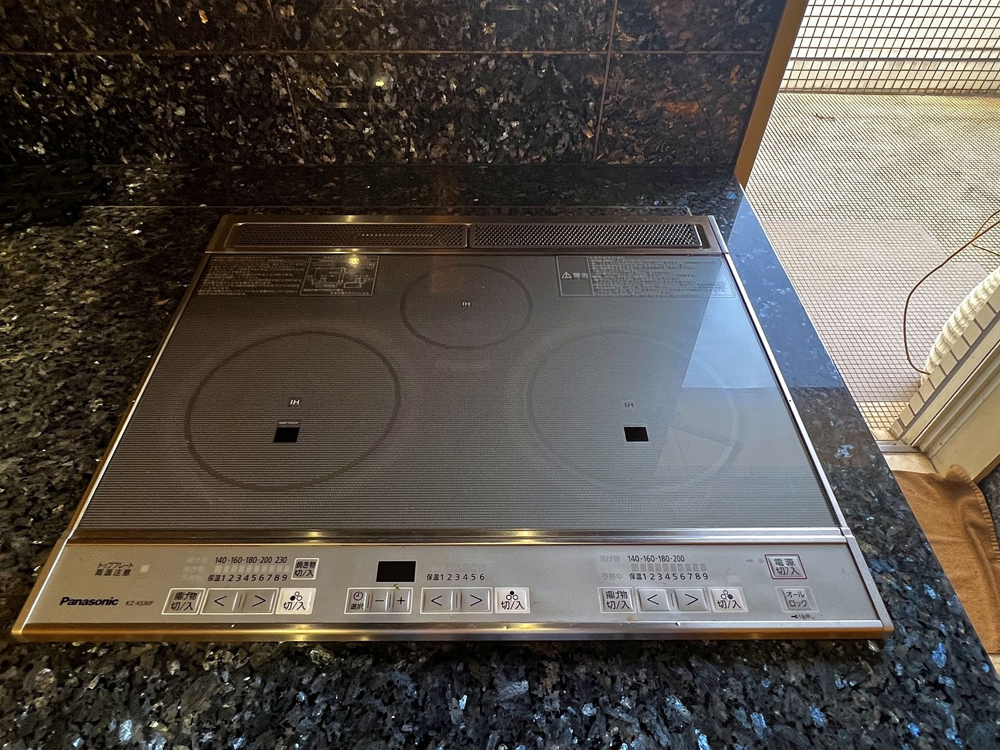
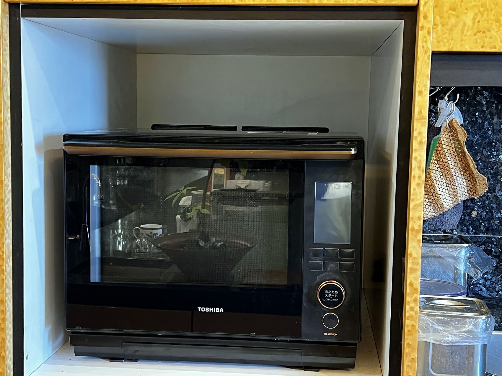
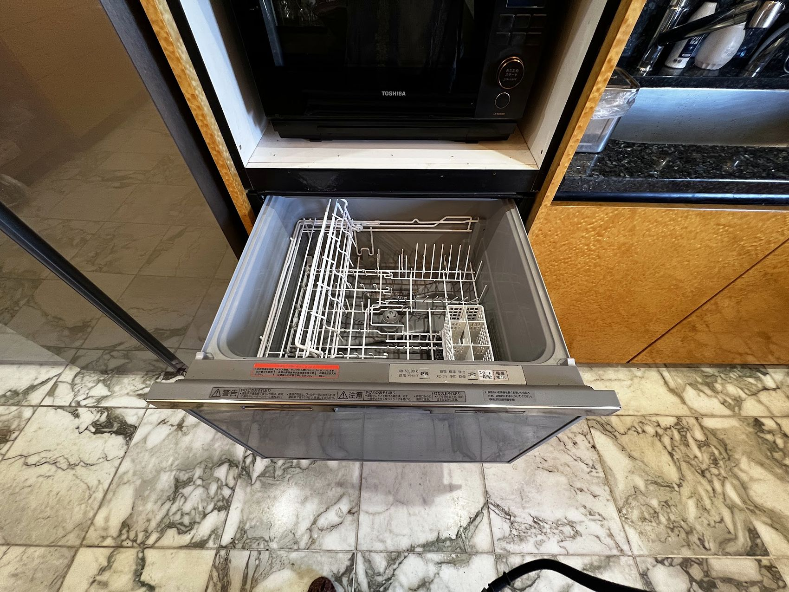
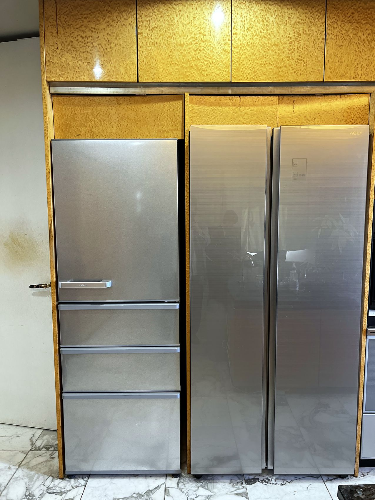
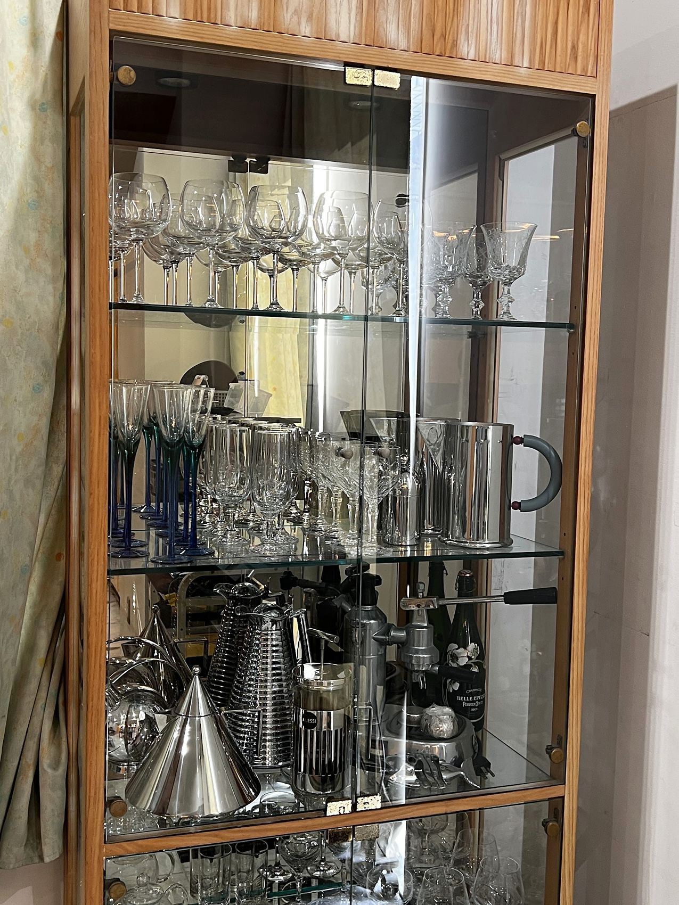
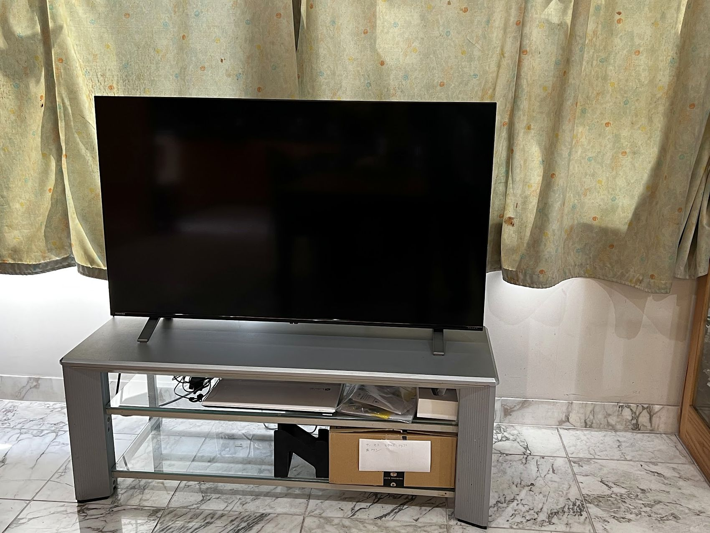

LIVING ・ 4F
The living room open to the sea
Marble floors, furniture shipped from Italy, and the Seto Inland Sea filling every window.
01 — INTRODUCTION
A 611㎡ residence suspended between sea and sky. All you hear is the waves, and the birds crossing the balcony.
Marble floors throughout by an Italian designer, furnishings commissioned from Italian workshops, contemporary art and antiques gathered from Japan and abroad. Woven together by two generations of design professionals, the house is as quiet as a private museum.
ORIGIN ・ 1995
This was once the founder's own home.
In 1995, ASAKURA founder Hiromi Asakura built ASAKURA ONEDAYSPA, a total beauty facility in Shinkita-cho, Takamatsu. Its fourth and fifth floors were her own home, furnished with pieces collected on her travels as a hair designer. That house is now open to guests.
Read the STORY →
02 — THE VIEW

DAY
At midday the sea is blue without end. Through the palm leaves, a single island.

DUSK
The hour when the sun folds into the islands. From the jacuzzi, you watch it go without a word.

NIGHT
At night the glass-walled jacuzzi lights up. The sea sinks into darkness, and only the stars remain.
03 — SPACES
LIVING
Rest and gather
LIVING ・ 4F
Marble floors, furniture shipped from Italy, and the Seto Inland Sea filling every window.

GARDEN ROOM ・ 4F
A second living room, under skylights and surrounded by plants.

AJI ・ JAPANESE ROOM ・ 4F
Walls of Aji granite that carry on outside — the Japanese room a Western visitor imagines.

KITCHEN & DINING ・ 4F
A table for twelve, where a chef can cook for you.

JACUZZI ・ 4F
Beyond 180 degrees of glass, a sea that changes colour by the minute.

TERRACE ・ 4F ・ 5F
Two terraces, on the fourth floor and the fifth. Salt air, and the islands in view.
BEDROOMS
The rooms are named after Setouchi islands. Six rooms including the Japanese room ・ up to 12 guests

NAOSHIMA ・ MASTER SUITE ・ 4F
You wake to nothing but sea and islands. With its own private WC inside the room.


MEGI + OGI ・ CONNECTING ・ 5F
Two rooms named after two islands that lie side by side in the Seto Inland Sea. Megi, coloured by textiles found on the owners' travels, and the calmer twin room Ogi, joined by a single door. Close enough for family or friends, with room to breathe.

SHODO ・ 5F
At the very end of the fifth floor, next to the bathroom. The chandelier casts a soft light.
BATH
Three WCs ・ two bathrooms

NAOSHIMA ・ PRIVATE WC ・ 4F
A private washroom inside the Naoshima master suite, finished in marble down to the floor, so you never have to cross paths with anyone.

BATH & SHOWER ・ 5F
Bath and shower, so even a full house doesn't queue in the morning.
FLOOR GUIDE
Floor guide
Hover over (or tap) a room on the plan to see its photo and description. The sea is on the right.
FLOOR PLAN
The floor plan, room by room
4F ・ 5F ・ 1F / down to every bathroom
WCs, bathrooms, corridors, the lift. Every corner of the house photographed, so you know it before you arrive.
See the floor plan
 61 photos ・ 2 films
61 photos ・ 2 filmsGALLERY
A day at the house by the sea
61 photos ・ 2 films
From the jacuzzi at dawn to the terrace at dusk and the lit facade at night — captioned photos and film, room by room.
See the galleryHOUSE TOUR
One walk through the house.
From the living room open to the sea to the jacuzzi, the marble kitchen, the canopy bedroom, the Aji-stone Japanese room and the terrace above the water — the whole house in about a minute.
The ground floor is private parking. Plans are illustrative.
04 — AMENITIES
FACILITIES
Whether a chef cooks or you do, the kitchen is built for a crowd — well beyond domestic scale.







05 — CONCIERGE
Tea in the Japanese room, the spring Konpira kabuki, a car from the airport. Everything around your stay, arranged in one place.
TEA ・ JAPAN
A tea master comes to the room, and you drink facing the sea. Ikebana, wasanbon sweets, kimono, udon-making — all in the house.
See the Japanese experiences →CHAUFFEUR
Transfers to the airport, station or port, a private driver for the day, even the ride home after dinner.
06 — RESERVE
Dining, experiences and transfers can be arranged along with your stay. They take time to prepare, so please get in touch early.
07 — HOUSE NOTES